Jul 2026
Breeder Farm and Hatchery Intern
Thai Foods Group Public Company Limited
InternshipActivities & Photos
Veterinary student at Chulalongkorn University. Camps, student club work and internships from 2023 to 2026, one year at a time.
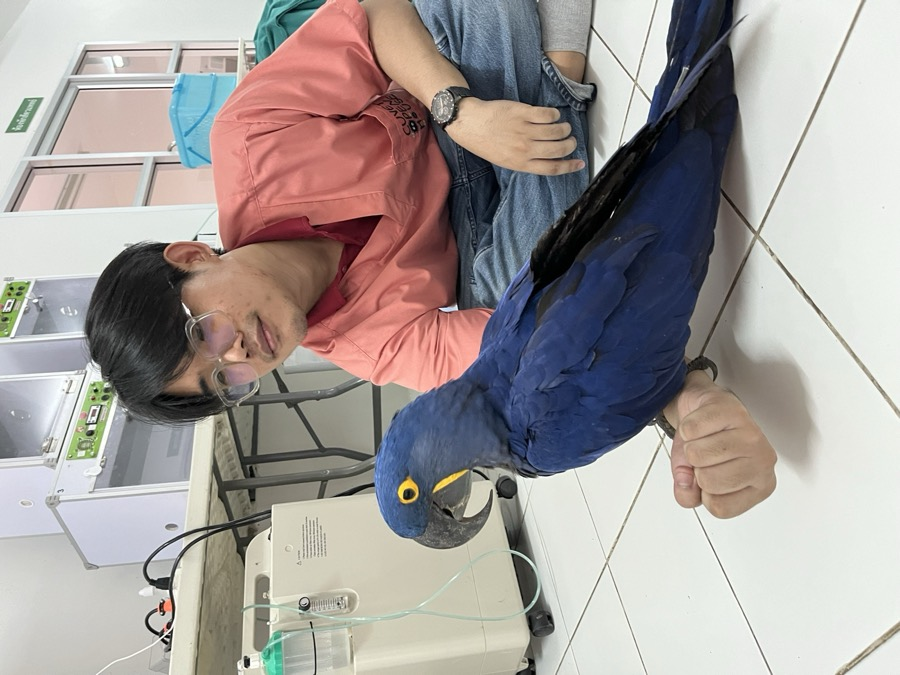
Thai Foods Group Public Company Limited
InternshipVeterinary Volunteer Camp for Community and Rural Development
Faculty of Veterinary Science, Chulalongkorn University
Camp43rd Vet Camp (CU Vet Camp)
Ratchaburi
Camp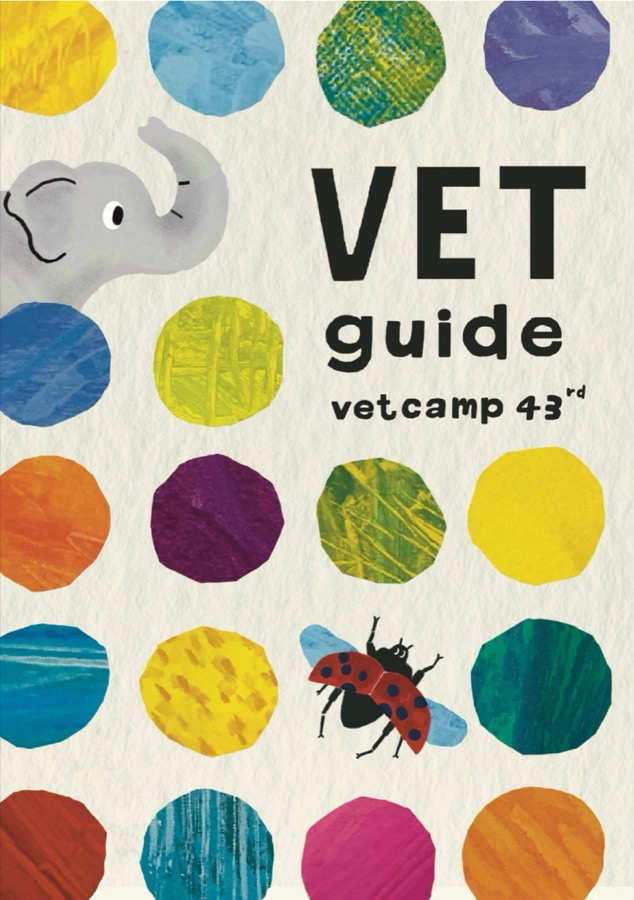
3Vet Lod Waste, Veterinary Student Club
60th Anniversary Building, Faculty of Veterinary Science, Chulalongkorn University
Student club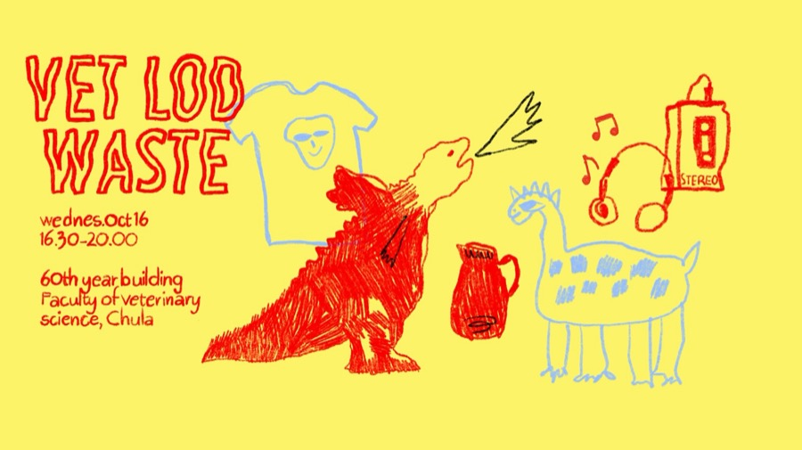
2Bang Phra Waterbird Breeding Station, Chonburi
InternshipVeterinary Student Club
Faculty of Veterinary Science, Chulalongkorn University
Student club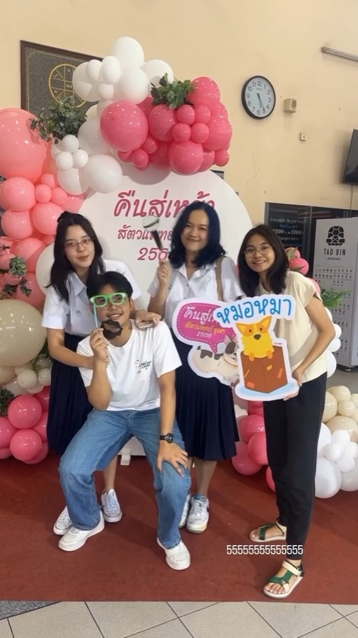
44th Chula–Chonburi Academic Camp (CUCHON44)
King Rama IX Commemorative Park, Chonburi
Camp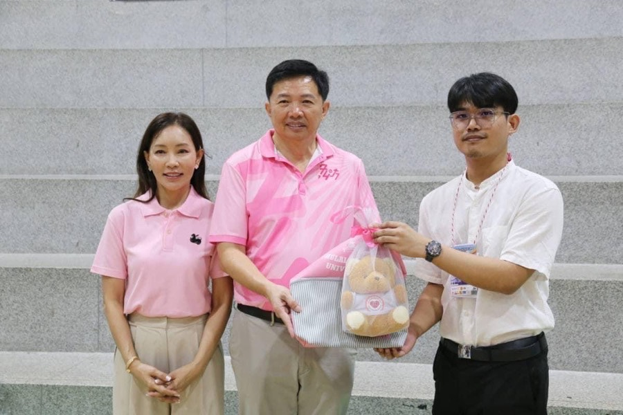
2Children and Youth Camp
Faculty of Veterinary Science, Chulalongkorn University
Camp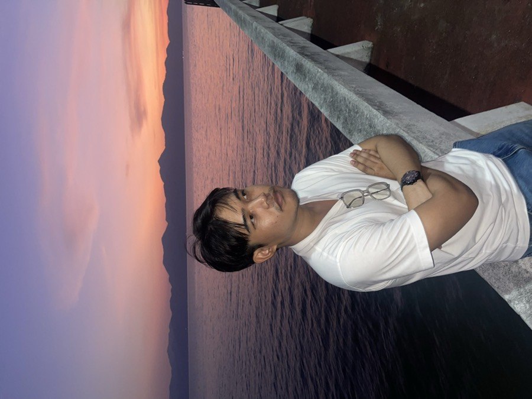
2Betagro Public Company Limited
Internship39th CUVET Freshy Camp
Faculty of Veterinary Science, Chulalongkorn University
Camp43rd Chula–Chonburi Academic Camp
Camp23rd Chula–Buriram Academic Camp
Camp42nd Vet Camp (CU Vet Camp)
Camp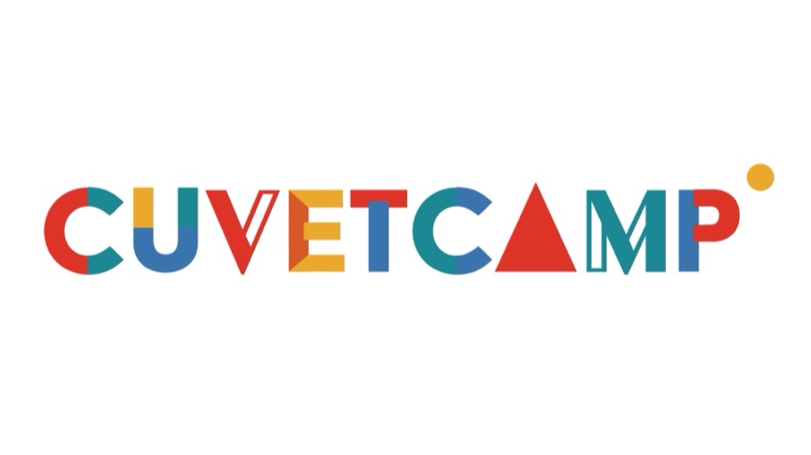
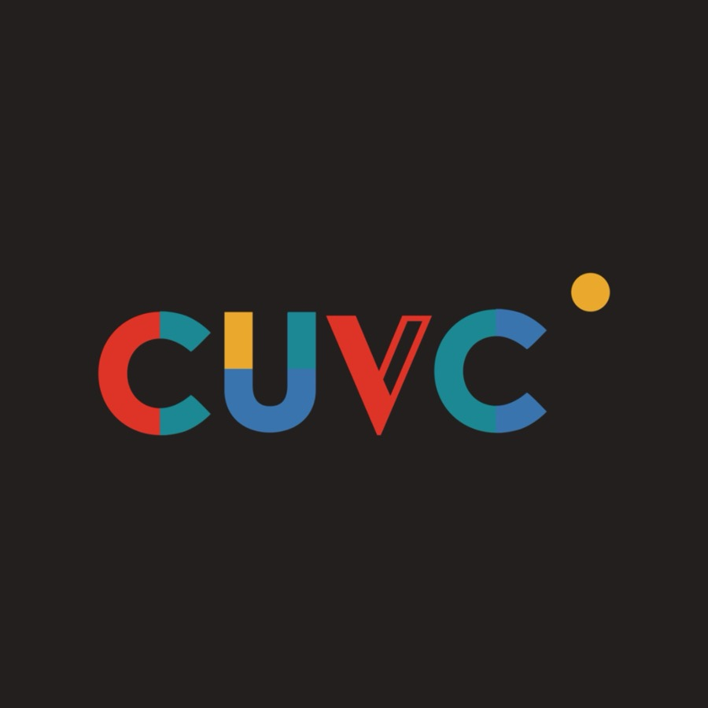
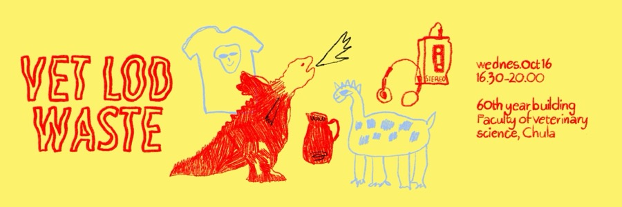
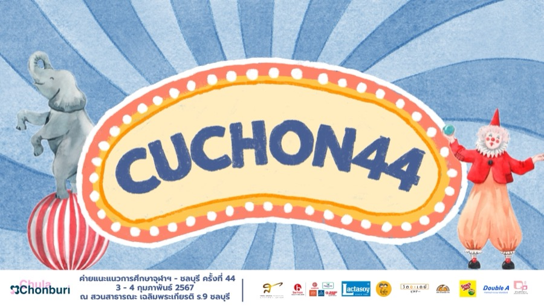
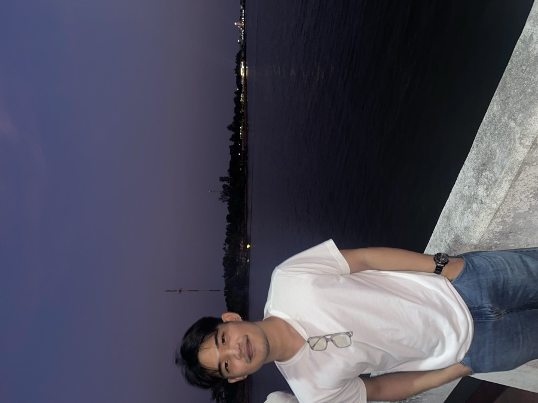